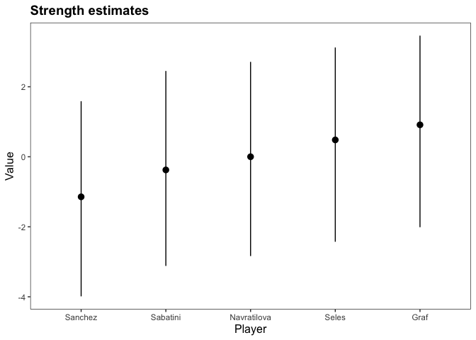

The bpcs package performs Bayesian estimation of Paired Comparison models utilizing Stan, such as variations of the Bradley-Terry (Bradley and Terry 1952) and the Davidson models (Davidson 1970).
Package documentation and vignette articles can be found at: https://davidissamattos.github.io/bpcs/
Installation
From version >= 1.2.0, we rely upon the Stan software and the cmdstanr package (Gabry and Češnovar 2020).
You need to have a suitable toolchain and install cmdstan and cmdstanr. The easiest way is to follow the instruction presented in the cmdstanr package. See https://github.com/stan-dev/cmdstanr
After installing and configuring cmdstanr properly, you can install the development version of the bpcs package directly from the Github repository.
remotes::install_github('davidissamattos/bpcs')After installing, we load the package with:
Minimal example
The main function of the package is the bpc function. For the simple Bradley-Terry model, this function requires a specific type of data frame that contains:
- Two columns containing the name of the contestants in the paired comparison
- Two columns containing the score of each player OR one column containing the result of the match (0 if player0 won, 1 if player1 won, 2 if it was a tie)
We will utilize the tennis dataset available (Agresti 2003). The dataset can be seen below and is available as data(tennis_agresti):
| player0 | player1 | y | id |
|---|---|---|---|
| Navratilova | Sanchez | 0 | 43 |
| Navratilova | Sanchez | 0 | 44 |
| Seles | Sanchez | 0 | 14 |
| Graf | Navratilova | 0 | 24 |
| Sabatini | Sanchez | 1 | 41 |
| Sabatini | Sanchez | 1 | 42 |
| Sabatini | Sanchez | 0 | 38 |
| Graf | Sanchez | 0 | 33 |
| Graf | Sanchez | 0 | 28 |
| Sabatini | Sanchez | 0 | 40 |
Based on the scores of each contestant, the bpc function computes automatically who won the contest. Alternatively, you can provide a vector of who won if that is already available (for more information see ?bpc.
For the simple Bradley Terry Model we specify the model type as 'bt'. Here we hide the MCMC sampler chain messages for simplicity in the output.
m<-bpc(data = tennis_agresti, #datafrane
player0 = 'player0', #name of the column for player 0
player1 = 'player1', #name of the column for player 1
result_column = 'y', #name of the column for the result of the match
model_type = 'bt', #bt = Simple Bradley Terry model
solve_ties = 'none', #there are no ties in the dataset so we can choose none here,
show_chain_messages = F
)
#> Running MCMC with 4 parallel chains...
#>
#> Chain 2 finished in 2.7 seconds.
#> Chain 1 finished in 2.8 seconds.
#> Chain 3 finished in 2.6 seconds.
#> Chain 4 finished in 2.7 seconds.
#>
#> All 4 chains finished successfully.
#> Mean chain execution time: 2.7 seconds.
#> Total execution time: 3.9 seconds.If cmdstanr is available and correctly working this function should sample the posterior distribution and create a bpc object.
To see a summary of the results we can run the summary function. Here we get three tables:
- The parameters of the model
- The probabilities of one player beating the other (this probability is based on the predictive posterior distribution)
- The rank of the player based on their abilities (this rank is based on the predictive posterior ranks).
summary(m)
#> Estimated baseline parameters with 95% HPD intervals:
#>
#> Table: Parameters estimates
#>
#> Parameter Mean Median HPD_lower HPD_higher
#> -------------------- ------ ------- ---------- -----------
#> lambda[Seles] 0.54 0.53 -2.40 3.31
#> lambda[Graf] 0.98 0.96 -1.87 3.78
#> lambda[Sabatini] -0.31 -0.31 -3.21 2.50
#> lambda[Navratilova] 0.07 0.08 -2.74 2.94
#> lambda[Sanchez] -1.10 -1.11 -4.06 1.65
#> NOTES:
#> * A higher lambda indicates a higher team ability
#>
#> Posterior probabilities:
#> These probabilities are calculated from the predictive posterior distribution
#> for all player combinations
#>
#>
#> Table: Estimated posterior probabilites
#>
#> i j i_beats_j j_beats_i
#> ------------ ------------ ---------- ----------
#> Graf Navratilova 0.72 0.28
#> Graf Sabatini 0.81 0.19
#> Graf Sanchez 0.95 0.05
#> Graf Seles 0.65 0.35
#> Navratilova Sabatini 0.65 0.35
#> Navratilova Sanchez 0.77 0.23
#> Navratilova Seles 0.45 0.55
#> Sabatini Sanchez 0.56 0.44
#> Sabatini Seles 0.34 0.66
#> Sanchez Seles 0.26 0.74
#>
#> Rank of the players' abilities:
#> The rank is based on the posterior rank distribution of the lambda parameter
#>
#> Table: Estimated posterior ranks
#>
#> Parameter MedianRank MeanRank StdRank
#> ------------ ----------- --------- --------
#> Graf 1 1.34 0.60
#> Seles 2 2.15 0.87
#> Navratilova 3 3.02 0.89
#> Sabatini 4 3.67 0.84
#> Sanchez 5 4.81 0.45
plot(m)
Features of the bpcs package
- Bayesian computation of different variations of the Bradley-Terry (including with home advantage, random effects and the generalized model).
- Bayesian computation of different variations of the Davidson model to handle ties in the contest (including with home advantage, random effects and the generalized model).
- Accepts a column with the results of the contest or the scores for each player.
- Customize a normal prior distribution for every parameter.
- Compute HDP interval for every parameter with the
get_parameters_dffunction - Compute rank of the players with the
get_rank_of_players_dffunction. - Compute all the probability combinations for one player beating the other with the
get_probabilities_dffunction. - Convert aggregated tables of results into long format (one contest per row) with the
expand_aggregated_data. - Obtain the posterior distribution for a single parameter of the model with the
get_sample_posteriorfunction or for all parameters withget_parameters_posterior. - Easy predictions using the
predictfunction. - Although we have some publication-ready functions that use
ggplotandkable, we do not reinforce any table or plotting library. All results can be obtained as data frames for easier plotting and creating tables. Just use the functions that end with_df - We reinforce the need to manually specify the model to be used.
Models available
- Bradley-Terry (
bt) (Bradley and Terry 1952) - Davidson model (
davidson) for handling ties (Davidson 1970)
Options to add to the models:
- Order effect (
-ordereffect). E.g. for home advantage (Davidson and Beaver 1977) - Generalized models (
-generalized). When we have contestant (players) specific predictors (Springall 1973) - Subject predictors (
-subjectpredictors). When we have subject-specific predictors (Böckenholt 2001). - Intercept random effects (
-U). For example, to compensate clustering or repeated measures (Böckenholt 2001)
E.g.:
- Simple BT model:
bt - Davidson model with random effects:
davidson-U - Generalized BT model with order effect:
bt-generalized-ordereffect
Notes:
- The model type should be first
- The order of the options do not matter:
bt-U-ordereffectis equivalent tobt-ordereffect-U - The
-is mandatory
Vignettes
This package provides a series of small and self contained vignettes that exemplify the use of each model. In the vignettes, we also provide examples of code for data transformation, tables and plots.
Below we list all our vignettes with a short description:
Getting Started: This vignette shows a basic example on tennis competition data, covering how to run a Bradley-Terry model, MCMC diagnostics, posterior predictive values, ranking, predict new matches
Ties and home advantage: This vignette covers a soccer example from the Brazilian soccer league. Here, we first model the results using a Bradley-Terry model and the Davidson model to handle ties. Then, we extend both models to include for order effects, this allows us to investigate the home advantage in and without the presence of ties.
Bradley-Terry with random effects: This vignette covers the problem of ranking black-box optimization algorithms based on benchmarks. Since in benchmarking we often run the same optimization algorithm more than once with the same benchmark problem, we need to compensate for the repeated measures effect. We deal with this utilizing a simple Bradley-Terry model with random effects.
- Paper “Bayesian Paired-Comparison with the bpcs package” (Arxiv:2101.11227).
- This paper describes the theory and related work behind the presented models along with 3 reanalyses in behavioral sciences. Including random effects, order effect, a subject specific predictors
- The reanalyses code can be found at: https://davidissamattos.github.io/bpcs-online-appendix/
Contributing and bugs
If you are interested you are welcome to contribute to the repository through pull requests.
We have a short contributing guide vignette.
If you find bugs, please report it in https://github.com/davidissamattos/bpcs/issues
Icon credits
- Boxing gloves image by “surang” from “flaticons.com”
- Hex Sticker created with the hexSticker package
References
Agresti, Alan. 2003. Categorical Data Analysis. Vol. 482. John Wiley & Sons.
Böckenholt, Ulf. 2001. “Hierarchical Modeling of Paired Comparison Data.” Psychological Methods 6 (1): 49.
Bradley, Ralph Allan, and Milton E Terry. 1952. “Rank Analysis of Incomplete Block Designs: I. The Method of Paired Comparisons.” Biometrika 39 (3/4): 324–45.
Davidson, Roger R. 1970. “On Extending the Bradley-Terry Model to Accommodate Ties in Paired Comparison Experiments.” Journal of the American Statistical Association 65 (329): 317–28.
Davidson, Roger R, and Robert J Beaver. 1977. “On Extending the Bradley-Terry Model to Incorporate Within-Pair Order Effects.” Biometrics, 693–702.
Gabry, Jonah, and Rok Češnovar. 2020. Cmdstanr: R Interface to ’CmdStan’.
Springall, A. 1973. “Response Surface Fitting Using a Generalization of the Bradley-Terry Paired Comparison Model.” Journal of the Royal Statistical Society: Series C (Applied Statistics) 22 (1): 59–68.